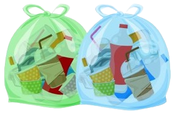

Sua História
ㅤㅤA história do plástico começou no século XIX com a invenção do primeiro plástico sintético, a baquelite, por Leo Baekeland em 1907. Este material revolucionou a indústria, pois era durável, resistente e moldável, podendo ser utilizado em uma variedade de aplicações. A popularização do plástico começou durante a Segunda Guerra Mundial(1939 a 1945), quando sua versatilidade e leveza o tornaram ideal para usos em equipamentos militares e industriais.
ㅤㅤApós a guerra, o plástico se tornou um material onipresente na vida cotidiana. A invenção de novos tipos de plásticos, como o polietileno e o polipropileno, ampliou ainda mais suas aplicações, desde embalagens até componentes eletrônicos. Na década de 1950, o plástico começou a substituir materiais tradicionais, como vidro e metal, em muitos produtos, devido à sua leveza, resistência à corrosão e baixo custo de produção.
ㅤㅤNo entanto, a ascensão do plástico trouxe consigo preocupações ambientais. O aumento da produção e do consumo de plástico resultou em um crescente problema de resíduos, uma vez que muitos plásticos não são biodegradáveis e podem levar centenas de anos para se decompor. Nos últimos anos, a conscientização sobre a poluição plástica levou a iniciativas globais para reduzir o uso de plástico descartável e aumentar a reciclagem e reutilização desses materiais.
ㅤㅤAtualmente, o plástico é uma parte fundamental da vida moderna, encontrado em praticamente todos os setores, incluindo saúde, transporte, e eletrônicos. A indústria está se adaptando, explorando alternativas sustentáveis e desenvolvendo plásticos biodegradáveis, buscando equilibrar as vantagens desse material com a necessidade urgente de proteger o meio ambiente.
Composição dos Plásticos
ㅤㅤOs plásticos são materiais versáteis que desempenham um papel fundamental em várias indústrias, devido às suas propriedades únicas e à sua capacidade de serem moldados em diversas formas. Eles são compostos principalmente por polímeros sintéticos, que são longas cadeias de moléculas formadas pela união de unidades menores chamadas monômeros.
ㅤㅤA principal matéria-prima para a produção de plásticos é o petróleo, que fornece os hidrocarbonetos necessários para criar uma variedade de polímeros. Além do petróleo, outras fontes de carbono, como o gás natural e a biomassa, estão sendo cada vez mais exploradas na produção de plásticos sustentáveis.
ㅤㅤOs polímeros podem ser classificados em duas categorias principais: termoplásticos e termofixos. Os termoplásticos, como polietileno e polipropileno, podem ser aquecidos e moldados repetidamente sem alterar sua estrutura química, permitindo que sejam reciclados de maneira eficiente. Já os termofixos, como a baquelite, solidificam-se de forma permanente após o aquecimento e não podem ser remodelados, o que limita suas opções de reciclagem.
ㅤㅤO processo de fabricação de plásticos envolve várias etapas. Inicialmente, o petróleo é extraído e processado para produzir produtos químicos básicos, como etileno e propileno. Esses produtos químicos passam por processos de polimerização ou policondensação para formar polímeros. A polimerização pode ocorrer de diferentes maneiras, como a polimerização por adição ou por condensação, dependendo do tipo de monômero utilizado.
ㅤㅤApós a síntese, os plásticos são moldados em diferentes formas através de processos como injeção, extrusão ou sopro. O método de injeção envolve injetar o plástico derretido em um molde, enquanto a extrusão é um processo contínuo onde o plástico é forçado através de uma matriz para criar formas longas, como tubos. O sopro, por sua vez, é utilizado para produzir objetos ocos, como garrafas.
ㅤㅤO entendimento da composição e dos processos de fabricação dos plásticos é crucial, não apenas para melhorar sua eficiência e desempenho, mas também para abordar questões ambientais associadas ao seu descarte e reciclagem. Com o aumento da conscientização sobre os impactos ambientais, a pesquisa e o desenvolvimento de plásticos biodegradáveis e recicláveis são cada vez mais importantes.
Tipos de Plástico
| Tipo | Aplicações | Características |
|---|---|---|
| Polietileno (PE) | Usado em embalagens, sacolas plásticas e garrafas. | Flexível, leve e resistente à umidade. Tipos: LDPE e HDPE. |
| Polipropileno (PP) | Comum em recipientes, utensílios de cozinha e embalagens de alimentos. | Boa resistência a impactos e temperaturas elevadas; reciclável. |
| Policloreto de vinila (PVC) | Utilizado em tubos, revestimentos de cabos elétricos e materiais de construção. | Versátil, disponível em formas rígidas e flexíveis. |
| Poliestireno (PS) | Usado em copos descartáveis, embalagens de alimentos e produtos de espuma. | Leve e fácil de moldar; pode ser expandido (EPS). |
| Polietileno tereftalato (PET) | Comum em garrafas plásticas e embalagens. | Alta resistência química e térmica; facilmente reciclável. |
| Termoplásticos de alto desempenho | Utilizados em aplicações industriais e médicas. | Excelente resistência térmica e química; mais caros que plásticos comuns. |
| Bioplásticos | Feitos de matérias-primas renováveis, usados em embalagens e utensílios. | Biodegradáveis e uma alternativa sustentável ao plástico convencional. |
Como Funciona a Reciclagem do Plástico
ㅤㅤA reciclagem de plásticos é um processo essencial para reduzir a quantidade de resíduos plásticos e promover a sustentabilidade. O primeiro passo é a coleta de plásticos usados, que pode incluir garrafas, embalagens, e outros itens plásticos. É fundamental que os plásticos sejam limpos e separados corretamente, evitando a contaminação com outros materiais.
ㅤㅤApós a coleta, os plásticos são levados a centros de reciclagem, onde são triados por tipo e cor. Esse processo é crucial, pois diferentes tipos de plásticos têm propriedades e processos de reciclagem distintos. Depois da triagem, os plásticos são triturados em pequenos pedaços, que são lavados para remover impurezas.
ㅤㅤOs pedaços limpos são então derretidos e moldados em pellets, que podem ser reutilizados para fabricar novos produtos. Esses pellets de plástico reciclado podem ser utilizados para criar uma ampla variedade de itens, desde novos recipientes até roupas e mobiliário. A reciclagem de plásticos não apenas reduz a quantidade de resíduos em aterros, mas também economiza energia e recursos, ajudando a diminuir a demanda por novos plásticos e, consequentemente, o impacto ambiental associado à sua produção.